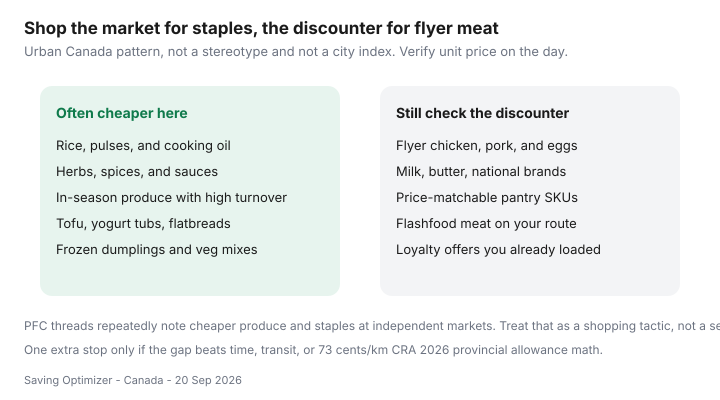

Food & Groceries · Canada
How to use ethnic grocers in Canada to cut produce and staple costs
Personal Finance Canada threads keep saying the same quiet thing: the cheapest cilantro, mangoes, 10 lb rice, and 4 L yogurt are often not at Loblaws. Mainstream Canadian grocery guides skip independent markets or flatten them into a stereotype. That is a miss. These stores are markets — high turnover, different pack sizes, and a unit-price game you already know how to play.
This is an urban playbook: what to buy there, how to combine it with a discounter flyer, and how to shop respectfully. It is not a list of “exotic” recipes and not a claim that every neighbourhood has the same shops.
Disclosure: There is no natural affiliate product in an independent grocer run. Saving Optimizer does not claim partnerships with any banner or market. This guide works with cash, debit, or whatever the till takes — no portal required.
Key takeaways
- Shop independent markets for produce and dry staples with high turnover. Keep flyer meat on Flipp unless the market’s poultry is truly cheaper.
- Treat stores as markets, not as a cuisine identity. Onions, cabbage, lentils, and rice do not require a new personality.
- One extra stop only if the gap beats time, transit, or a honest kilometres test (CRA 2026 provincial allowance is 73¢/km — a strict ceiling, not your gas receipt).
- Read the scale sticker and the language on the bag. $/kg still wins.
- PFC comparison threads are a pattern, not a search-volume statistic.
What ethnic grocers often price better

High-turnover herbs, in-season fruit, bulk onions, cabbage, chili, rice, pulses, tofu, large yogurt, and cooking oil are the usual wins. National-brand cereal, name-brand peanut butter, and Thursday chicken still belong in your discounter rotation more often than not.
City examples without stereotyping (approach as markets)
Name the job, not the ethnicity of the owner:
- GTA: a South Asian grocer for 10 kg basmati and pulses; a Chinese or Vietnamese grocer for greens and tofu; a Middle Eastern grocer for yogurt, bread, and bulk spices. You might only need one of those.
- Vancouver / Calgary: Asian and South Asian markets along the usual corridors — still compare $/kg to Superstore or Walmart.
- Montréal: Jean-Talon-adjacent and Côte-des-Neiges-style independents plus Super C / Maxi for the flyer.
- Smaller cities: one “international foods” aisle at a banner is not the same as a dedicated market. If you do not have the store, skip the extra drive.
Do not write a shopping personality around a TikTok tour. Walk in with a list of five staples.
Spices, rice, legumes, and produce tactics
| Category | Tactic | Skip when |
|---|---|---|
| Rice / pulses | Weigh $/kg on 4–10 kg bags | You cannot store or finish the bag |
| Spices | Loose or large bags beat tiny banner jars | You will use the jar twice a year |
| Produce | Buy what looks busy and turns over | The pile is tired and you are “being hopeful” |
| Tofu / yogurt | Check date and pack size | A 4 L tub for one person with no plan |
Asian-market rice and sauce detail is its own guide. Pulses and tofu sit in cheap plant proteins.
Quality and turnover advantages
A busy produce table often beats a sad clamshell at a premium banner, even before price. That is inventory speed, not magic. Smell herbs. Avoid the back of a wilted pile. Frozen dumplings and veg mixes at these stores can also beat Costco if you do not need a membership run this month.
Combining with a discounter for dairy and meat sales
Assign store roles the way the two-store strategy does: market for staples and produce, discounter for flyer proteins, eggs, and price-matchable SKUs. Do not rebuild the whole cart at the market “because you are already there.” That is how $4 garlic becomes a $90 receipt.
Loyalty note: most independents will not scan PC Optimum or Scene+. That is fine. Cheaper shelves beat richer points — the same rule as the loyalty comparison.
Respectful shopping and label literacy
You are in someone else’s store. Do not block the aisle for photos. Do not haggle like it is a TV market if prices are posted. Weigh produce the way the sign says. If a label is not in English or French, use the scale, the number, and a short question. Halal, kosher, or vegetarian marks mean what they say — useful, not decorative.
Food from stores was still +2.8% year over year in August 2026 (Statistics Canada Daily, 14 Sep 2026). Independent markets are one of the levers that never show up in a banner-only flyer app.
Sources & date stamps
- Community pattern: r/PersonalFinanceCanada grocery-comparison and “cheaper than Costco” threads — independent produce and staples. Directional, not a volume statistic.
- Statistics Canada Daily, 14 Sep 2026: food from stores +2.8% year over year in August 2026.
- CRA 2026 prescribed automobile allowance (Finance Canada, Jan 2026): 73¢/km first 5,000 km in the provinces — a thinking ceiling for an extra stop, not your true fuel cost.
Frequently asked questions
What do ethnic grocers usually price better than banners?
Often rice, pulses, cooking oil, spices, tofu, yogurt tubs, herbs, and in-season produce with high turnover. Flyer chicken, milk, and national-brand pantry SKUs still belong in your Flipp discounter run unless the market’s unit price wins.
Is this only for people who already cook that cuisine?
No. You are shopping a market for staples you already eat — onions, cabbage, lentils, rice — not performing a culture. Read labels and ask if you do not recognize a cut.
Which Canadian cities is this for?
Any urban area with independent grocers: the GTA, Montréal, Vancouver, Calgary, Edmonton, Ottawa, Winnipeg, and others. Rural households may have one store or none. Do not invent a national map.
How do I combine this with a discounter?
Assign jobs. Market: produce and dry staples. No Frills, FreshCo, Food Basics, Super C, or Maxi: flyer proteins, dairy, price matches. One extra stop only if the gap beats time or transit.
Do I need to speak the language of the store?
Courtesy and label literacy matter more. Point, ask, and use the scale. Do not treat staff as a tour. Pack your own bags if that is the norm.